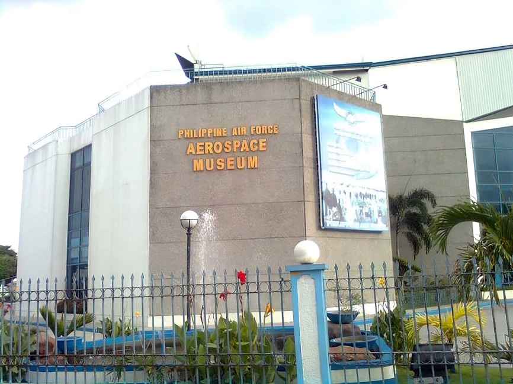

PAF Aerospace
Museum
The PAF Aerospace Museum preserves the rich history of the Philippine Air Force, from vintage propeller planes to modern jets that served in critical national missions.
Experience a journey through time and technology in this one-of-a-kind aerospace collection.